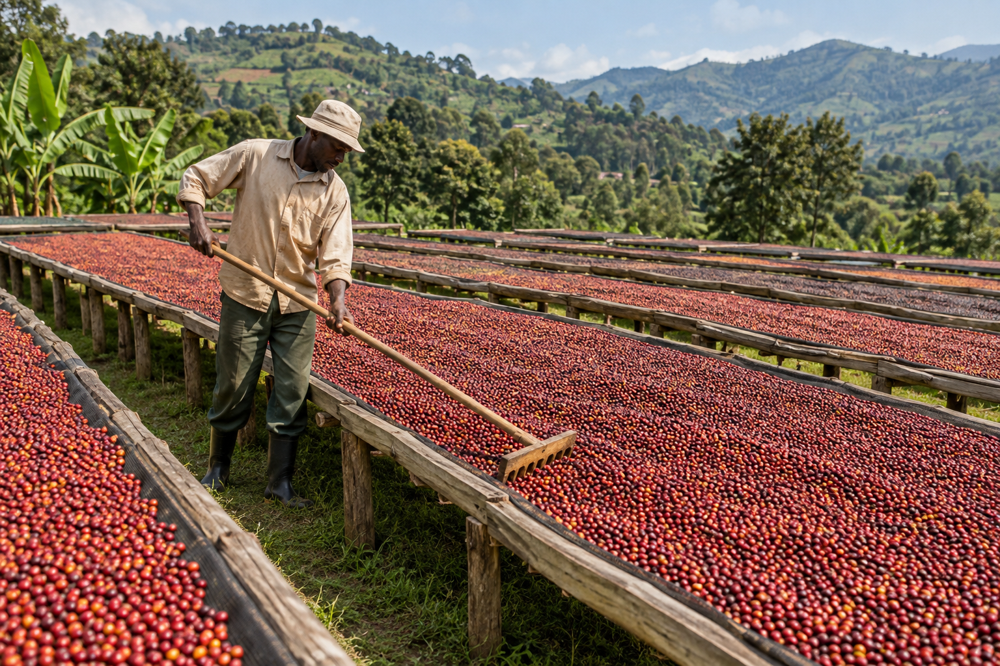

Our coffee
Robusta and Arabica from Uganda.
We source and trade Ugandan green coffee, working across origin relationships and careful preparation without losing sight of the people behind every lot.

Ugandan Robusta
Deep roots. Strong commercial relevance.
Robusta is native to Uganda’s coffee landscape and central to the country’s role in coffee trade.
Kioji engages with Robusta through sourcing relationships, green coffee handling and buyer conversations. Availability and requirements can be discussed directly with our team.
Enquire about RobustaUgandan Arabica
Shaped by highland landscapes.
Arabica is grown in several elevated coffee-producing areas of Uganda, each with its own growing context.
We present Ugandan Arabica for green coffee buyers while keeping claims specific to the coffee available. Contact us to discuss current sourcing possibilities.
Enquire about Arabica
Handling
Prepared with attention from cherry onward.
Coffee quality depends on many decisions. Sorting, drying, storage and movement all contribute to how green coffee reaches its next stage.


Drying and preparation
Green coffee inspection